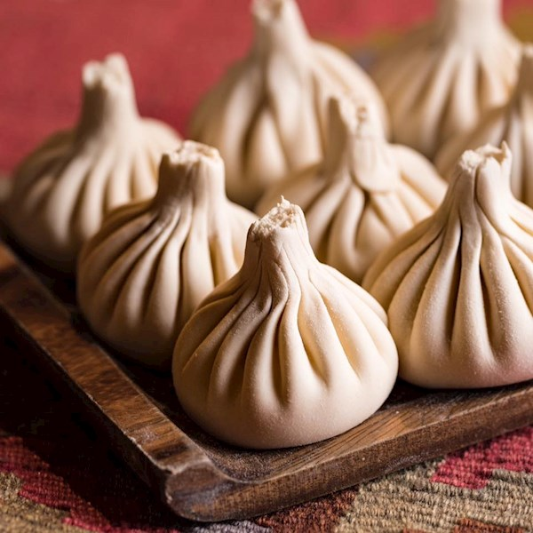

Khinkali Recipe

Khinkali is a dumpling in Georgian cuisine. It is made of twisted knobs of dough, stuffed with meat, fish or vegetables and spices.
Ingredients:
For the dough you'll need
- 2 cups all-purpose flour (about 8 1/2 ounces), plus more for work surface
- 1/2 teaspoon fine sea salt
- 1/2 cup water
- 1 large egg, beaten
- Olive oil, for greasing
For the meat filling you'll need
- 4 ounces 80% lean ground beef
- 4 ounces ground pork
- 3/4 cup water
Recipe Instructions
- Make the dough
- Make the meat filling
- Shape the khinkali
- Boil for 8 to 10 minutes
and just like that voila! you have just made the world's best dumpling dish known to mankind!
Main page